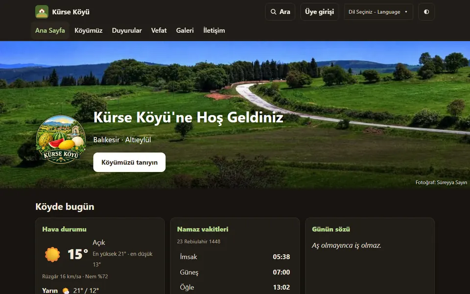
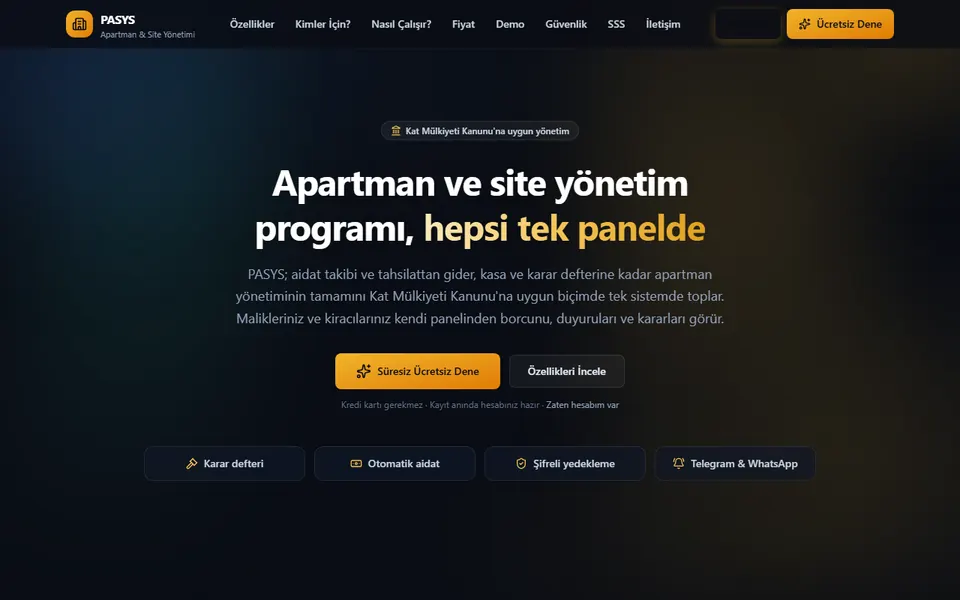
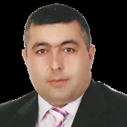

Kişisel ve tanıtım siteleri
Kendinizi, işinizi ya da yeteneklerinizi anlatan kişisel siteler; esnaf ve kurumlar için tanıtım sayfaları. Hızlı açılan, Google'da bulunan, sosyal medya, harita ve WhatsApp bağlantılı.
Örnek: şu an baktığınız site
Serbest (freelance) yazılım geliştirici · Kamudan emekli · 25 yılı aşkın BT deneyimi
Kişisel siteler, kurum ve dernek siteleri, kullanıcı girişli yönetim programları, sunucu kurulumu, yedekleme ve güvenlik. Tasarımdan veritabanına, testten yayına kadar işin her aşamasını kendim yapıyorum. Yapay zekâyı bir çalışma aracı olarak kullanıyorum; yazılan her satırı test edip sorumluluğunu ben alıyorum.
Küçük bir tanıtım sayfasından çok kullanıcılı yönetim programına kadar. Her birinin arkasında gerçek, çalışan bir örnek var.
Kendinizi, işinizi ya da yeteneklerinizi anlatan kişisel siteler; esnaf ve kurumlar için tanıtım sayfaları. Hızlı açılan, Google'da bulunan, sosyal medya, harita ve WhatsApp bağlantılı.
Örnek: şu an baktığınız site
Haber, duyuru, vefat ilanı, galeri, etkinlik, hava durumu, namaz vakitleri. Yönetici telefondan günceller; WhatsApp'ta paylaşılan her ilan kendi başlığı ve fotoğrafıyla görünür.
Örnek: Kürse Köyü
Aidat, tahsilat, gider, kasa, karar defteri, raporlar. Defterde ya da Excel'de yürüyen işi; yetkileri, onay akışları ve PDF çıktılarıyla düzenli bir programa taşırım.
Örnek: PASYS
Rol bazlı yetki (yönetici, editör, üye...), iki adımlı doğrulama, oturum güvenliği, kimin ne yaptığını gösteren işlem kaydı.
Önce telefon için tasarım; ana ekrana uygulama gibi eklenen, bildirim gönderebilen, yavaş internette de hızlı açılan sayfalar. Çok dilli içerik.
Örnek: Kürse Köyü
Telegram, WhatsApp ve telefon bildirimleri; hava durumu, namaz vakitleri gibi dış servislerden veri; banka ekstresi aktarımı; zamanlanmış otomatik işler.
Docker ile kurulum, otomatik HTTPS, şifreli günlük yedek ve geri yükleme, güvenlik duvarı, ağ altyapısı. Bulut sunucusunda birden fazla siteyi bir arada yayınlama.
Örnek: iki proje aynı Oracle Cloud sunucusunda · Docker nedir?
Home Assistant ile akıllı ev, evde kişisel bulut, tüm ağda reklam ve zararlı site engelleme, ev medya sunucusu. Hepsi Docker ile, az elektrik harcayan küçük cihazlarda.
Örnek: Kendi ev sunucularım
Veri toplama ve temizleme, grafik ve raporlar, makine öğrenmesiyle puanlama ve tahmin modelleri, sonuçların geçmiş veriyle ölçülmesi.
Hepsi gerçek, çalışan sistemler. Yayında olanları şimdi açıp gezebilirsiniz.

Köy sitesi · Yayında
Balıkesir'deki köyüm için hazırladığım tanıtım, haber ve dayanışma sitesi. Ana sayfadaki fotoğraf da benim çekimim.
Python · FastAPI · PostgreSQL · Redis · React · TypeScript · Docker · Oracle Cloud
Siteyi aç (yeni sekmede) ↗
Yönetim yazılımı · Yayında
Kat Mülkiyeti Kanunu'na uygun, çok siteli ve çok bloklu apartman yönetim programı.
Python · FastAPI · PostgreSQL · Celery · React · TypeScript · Docker
Siteyi aç (yeni sekmede) ↗Ev sunucusu · Docker · Kendi kullanımım
Evimde, az elektrik harcayan küçük bilgisayarlarda (ör. NVIDIA Jetson, ARM64) Docker ile kurup yönettiğim sistemler. Her parça kendi konteynerinde çalışıyor; bir sorun olursa kendiliğinden yeniden başlıyor.
Home Assistant ile ışık, priz, sensör ve cihazlar tek panelden yönetiliyor. Cihazlar Mosquitto (MQTT) ve Zigbee üzerinden haberleşiyor, otomasyon senaryoları Node-RED ile görsel olarak kuruluyor.
Nextcloud ve MariaDB ile Google Drive benzeri dosya ve fotoğraf eşitleme. Veriler evde kalıyor, her gece ayrı bir diske otomatik yedekleniyor.
Pi-hole, evdeki bütün cihazlar (telefon, televizyon, bilgisayar) için reklam, takip ve zararlı alan adlarını DNS düzeyinde engelliyor. Cihazlara ayrı program kurmak gerekmiyor.
Jellyfin ile kendi video ve fotoğraf arşivimi televizyondan ve telefondan izliyorum. Kendi hazırladığım altyazı çeviri konteyneri İngilizce altyazıyı Türkçeye çeviriyor. Portainer ve Heimdall ile yönetim panelleri, Watchtower ile gece otomatik güncelleme.
Docker · Home Assistant · MQTT · Zigbee · Node-RED · Nextcloud · MariaDB · Pi-hole · Jellyfin · Portainer · Watchtower · NVIDIA Jetson
İşi kullanacak kişiyi anlamadan tek satır yazmam. Ekranlar, teknik bilgisi olmayan birinin de rahat kullanacağı sadelikte olur.
Yetkilendirme, işlem kaydı, şifreli yedek, aydınlatma metni sonradan eklenmez; tasarımın parçasıdır.
Her işlev otomatik testlerle denenir; telefonda ve bilgisayarda gerçek tarayıcıda kontrol edilir.
Yapay zekâyı deneyimli bir yardımcı gibi kullanıyorum: işler haftalar yerine günler içinde ilerliyor, karar ve kontrol bende kalıyor.
Her sürüm notlarıyla kaydedilir; kurulum, yedek ve geri yükleme adımları yazılıdır. Yarın başkası devralsa bile yolunu bulur.
Bir sunucuya ya da firmaya bağımlı kalmaz; Docker ile her yere taşınabilir, alan adı değişse bile linkler kırılmaz.
Yazdığım programları Docker ile kuruyorum. Kısaca anlatmak gerekirse: program, çalışması için gereken her şeyle birlikte (veritabanı, ayarlar, yardımcı parçalar) ayrı ayrı “kutulara”, yani konteynerlere konur.
Gemilerdeki standart yük konteynerlerini düşünün: içinde ne olursa olsun her limanda, her vinçte aynı şekilde taşınır. Docker da yazılım için bunu yapar.
Benim bilgisayarımda nasıl çalışıyorsa sunucuda da öyle çalışır. “Bende çalışıyordu, sunucuda bozuldu” sorunu ortadan kalkar.
Sanal makine gibi her program için ayrı bir işletim sistemi kurulmaz; bu yüzden çok daha az bellek ve disk harcar. Kürse Köyü ve PASYS aynı sunucuda birlikte çalışıyor.
Site, veritabanı, yedekleme ve zamanlanmış işler tek bir komutla birlikte ayağa kalkar. Kurulum için günlerce uğraşmak gerekmez.
Sunucu ya da firma değiştirmek istediğinizde sistem tüm verisiyle birkaç adımda yeni yerine taşınır. Hiçbir firmaya mahkûm kalmazsınız.
Her parça kendi kutusunda çalışır; birinde sorun çıkarsa diğerlerine sıçramaz. Veritabanı internete hiç açılmaz, dışarıya yalnızca sitenin kapısı açıktır.
Bir parça takılırsa otomatik olarak yeniden başlatılır. Bir güncelleme sorun çıkarırsa önceki sürüme hızla geri dönülür.

Balıkesir doğumluyum. 1995'ten 2021'de emekli olana kadar 26 yıl kamuda çalıştım; bu sürenin büyük bölümünde bilgi teknolojileri yöneticisi olarak görev yaptım. Kurumun sunucularını, ağ ve kablosuz altyapısını, güvenlik duvarlarını, IP santralini ve kurumsal bilgi sistemlerini kurdum ve yönettim.
Tekirdağ Çerkezköy Belediyesi ile ortaklaşa yapılan Kent Güvenlik Yönetim Sistemi (KGYS), Plaka Tanıma Sistemi (PTS) ve Elektronik Denetleme Sistemi (EDS) projelerinde proje sorumlusu olarak görev aldım; kamera ve plaka tanıma noktalarının kurulumu, ağ altyapısı, işletme ve bakımını yürüttüm.
Emekli olduktan sonra serbest (freelance) çalışmaya başladım. Evimden, uzaktan çalışıyorum; kamudaki birikimimi, yapay zekâyı da çalışma arkadaşı yaparak gerçek ihtiyaçlara çözüm olan yazılımlara dönüştürüyorum. Boş zamanlarımda fotoğraf çekiyor ve bisiklete biniyorum.
Çoğu, Kürse Köyü ve PASYS projelerinde fiilen kullanılıyor.
Bir fikriniz, sorunuz ya da “şu yapılabilir mi?” dediğiniz bir şey varsa yazın; konuşalım. Saray / Tekirdağ'dayım; uzaktan çalıştığım için nerede olduğunuz fark etmez.
E-posta: sureyya.sayin [at] gmail [nokta] com
Telefon: